人生无法回头，游戏也一样，在游戏中所做的一切都无法修改，所有的选择都关乎结局，望请三思
1960年10月30日你出生在布宜诺斯艾利斯 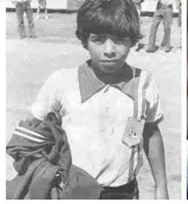
1975年10月20日你在阿根廷青年人与科多巴队的比赛中替补出场，完成了个人在阿根廷甲级联赛的处子秀。几天后，你在联赛中打进了2个球 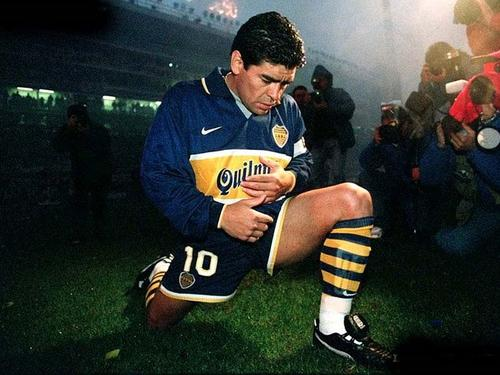
1981年6月你从阿根廷青年人转会博卡青年，在40场比赛中打进28球，并随球队获得阿根廷甲级联赛冠军。 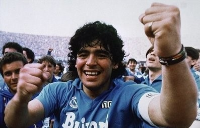
1982年6月18日阿根廷在西班牙世界杯小组赛第二战中4-1大胜匈牙利，这是你在世界杯上取得的第一场胜利。你在比赛中梅开二度，打进了自己在世界杯上的前两粒进球。7月2日，在阿根廷队同巴西队的世界杯比赛中，对手一次又一次的侵犯你，使得你很难发挥出自己的水平 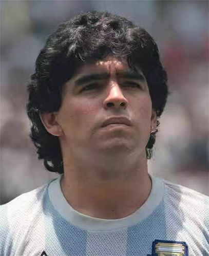
1984年7月5日你以创纪录的750万美元转会费加盟意大利那不勒斯队1987年5月10日你率队历史上首次加冕意甲冠军1988年你第一次拿到意甲最佳射手金靴奖1989年你率领那不勒斯首次夺得欧洲联盟杯冠军，在这届杯赛中，你共打入3球，并有10次助攻。 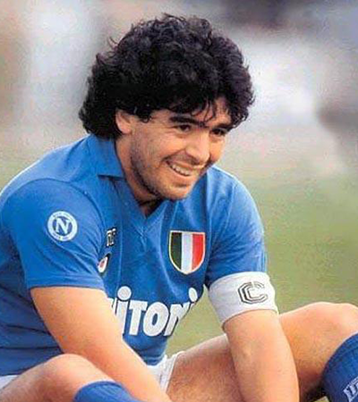
你用手隐蔽地将这球打入球门，并幸运地没有被裁判发现，最终帮助球队2-1取胜，并在决赛中击败联邦德国夺取世界杯

1990年你带领那不勒斯第二次拿到意甲联赛冠军。同年，你带领那不勒斯5比1大胜尤文图斯，捧得意大利超级杯冠军。1991年3月17日在那不勒斯与巴里队的意甲比赛之后，你被查出吸食可卡因，随后被意大利足协禁赛15个月。 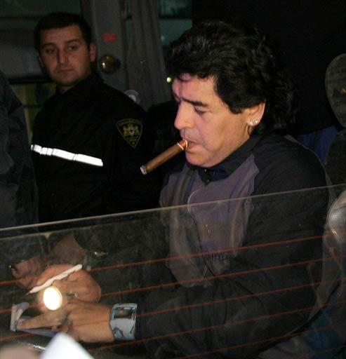
1992年9月22日经过近3个月的谈判之后，你以750万美元的价格转会到西班牙的塞维利亚队。同年10月4日，年近32岁的你首次代表塞维利亚出场，球队以1比2输给了毕尔巴鄂竞技。你在塞维利亚呆了1年，于1993年6月12日踢了最后一场比赛，在这一年里共参赛29场，收获8个进球 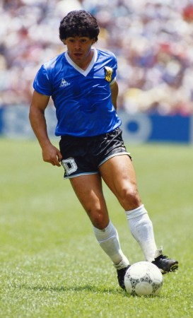
1975年8月14日，14岁的你升入了阿根廷青年人俱乐部的成年队，被列入了阿根廷甲级职业比赛的名单。创造了阿根廷国内联赛的一项纪录。你获得了职业生涯中的第一个号码是16号。 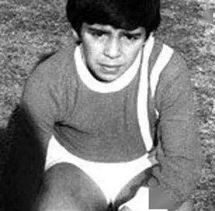
1978年年仅17周岁的你以26粒进球夺得阿根廷甲级联赛最佳射手，成为阿甲联赛历史上最年轻的最佳射手。 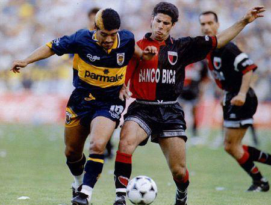
1982年7月你以创足坛转会费纪录的12亿比塞塔（900万美元）的身价转投巴塞罗那1982年9月4日，你上演了巴萨处子秀，球队1比2负于瓦伦西亚，你攻入唯一进球。这一年，你帮助巴塞罗那拿到了西班牙国王杯、西班牙联赛杯和西班牙超级杯。 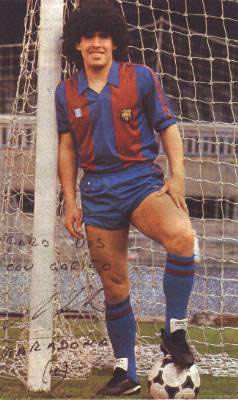
最终你因为抬腿踢人而被红牌罚下，在西班牙世界杯上，你共收获了两个进球，不过因为这次红牌，你付出了2年多没有入选国家队的代价。1985年5月9日，在比拉尔多的召唤下，你又重新披上了阿根廷队的球衣 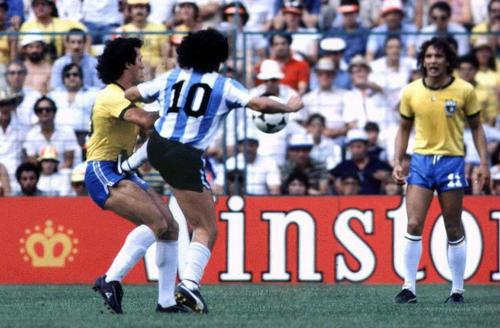
1986年你带领阿根廷队在墨西哥世界杯1/4决赛上与死敌英格兰队相遇，在比赛中连过英格兰五名球员打入一粒载入史册的进球紧接着，你获得了一次破门机会，但球高过你的头顶 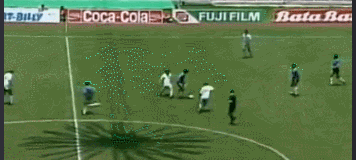
你没有选择用手将这球打入，1-1的比分将双方拖入点球大战，最终你们在点球大战中落败，结束了这次世界杯之旅 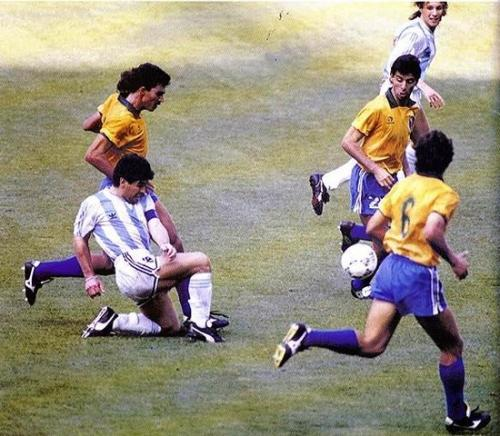
1990年你带领那不勒斯第二次拿到意甲联赛冠军。同年，你带领那不勒斯5比1大胜尤文图斯，捧得意大利超级杯冠军。 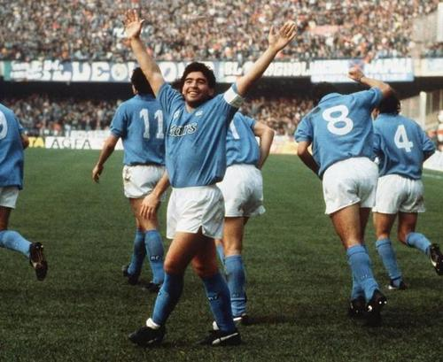
1994年6月30日在世界杯的反兴奋剂检查中，你的尿检呈阳性，国际足联决定禁止你参加所有比赛。 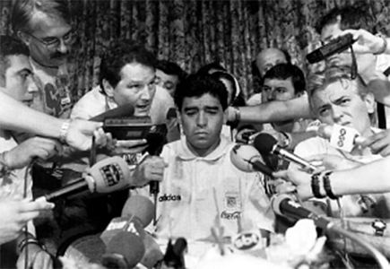